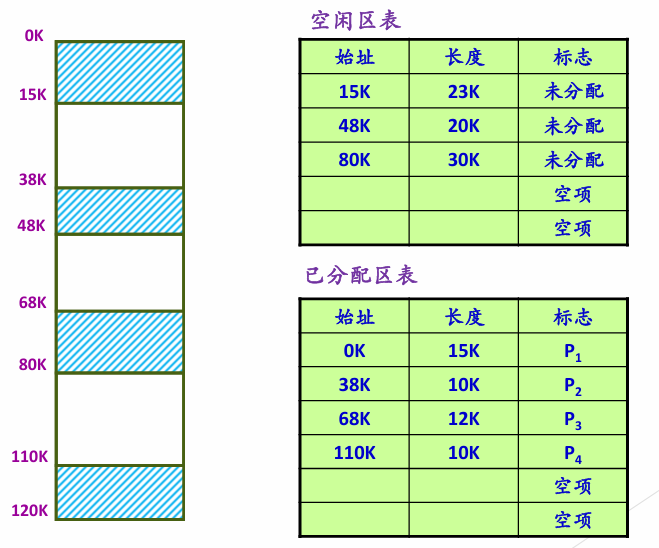
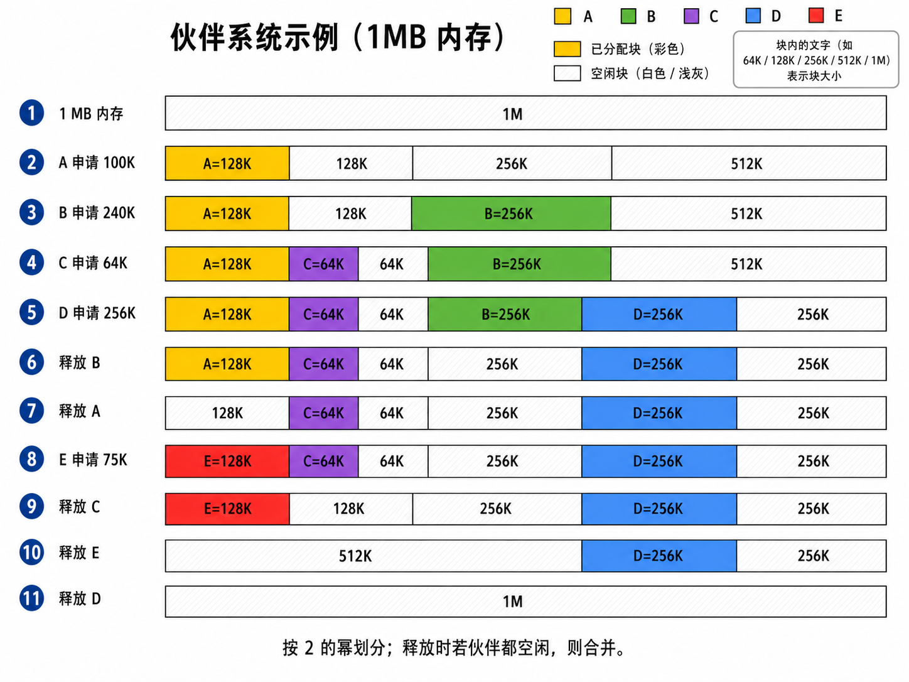
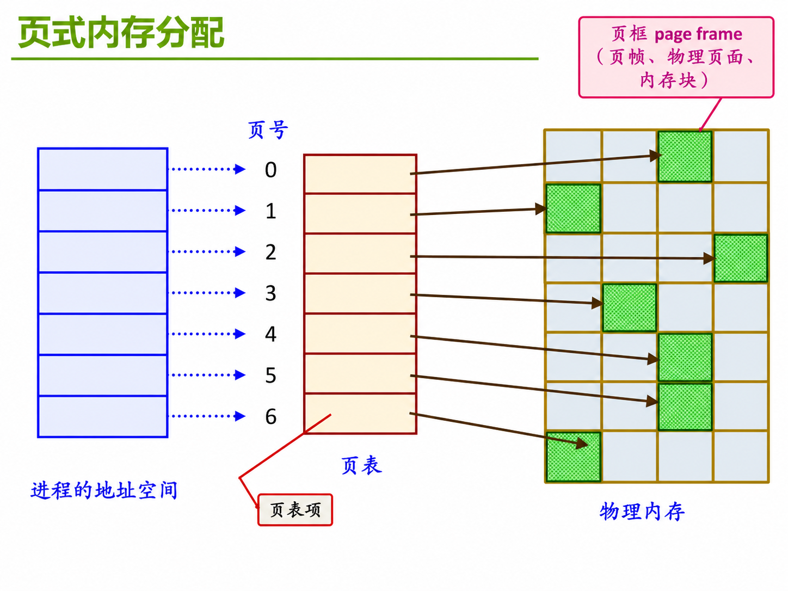
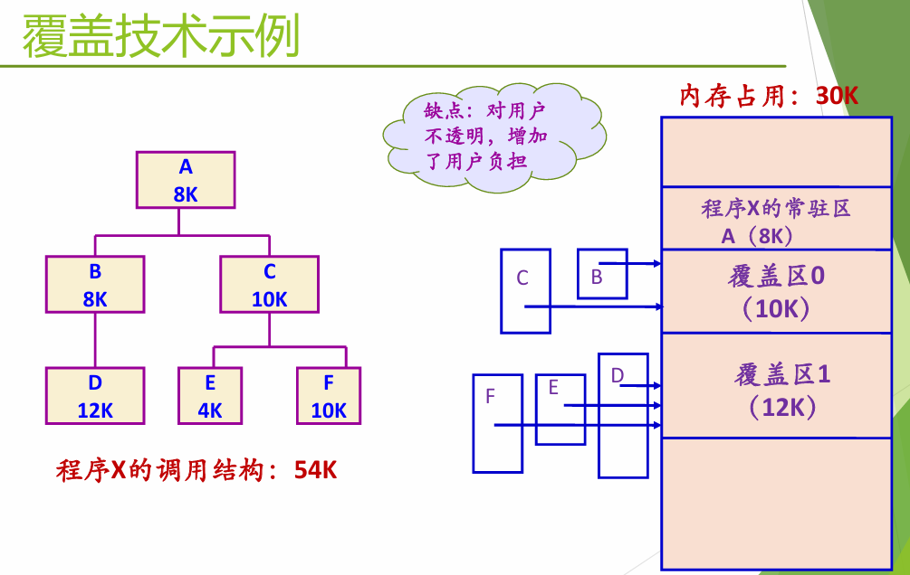

核心观点与演进脉络
这部分的重点不是一上来就学“虚拟内存”，而是先理解：操作系统为什么需要管理内存，以及内存管理是怎样一步步从简单方案演化到复杂方案的。
课件一开始就提醒我们：内存管理不等于虚拟内存管理。虚拟内存只是内存管理发展到后期的一种重要方案，而在它之前，操作系统已经遇到并解决了很多基本问题：程序装到哪里？地址怎么转换？进程之间怎么隔离？空闲内存怎么分配？内存不够时怎么办？
整条主线可以这样看：
早期物理内存直接使用 ↓ 多道程序设计：多个程序同时进入内存 ↓ 分时共享：多个用户 / 多个进程共享系统 ↓ 地址空间抽象：每个进程都有自己的“内存世界” ↓ 页式、段式、段页式等管理方案 ↓ 覆盖、交换、虚拟内存等内存扩充技术所以这节课真正想让我们理解的是：地址空间是对内存的抽象，地址转换是连接抽象世界和物理世界的桥，存储保护是让多个进程安全共存的边界。
一、为什么需要内存管理？
一个现在看起来已经成为常识的前提是：程序必须装载到内存中才能运行。
程序平时是以可执行文件的形式保存在磁盘上的。磁盘可以长期保存数据，但 CPU 不能直接从普通磁盘文件中一条条取指令执行。程序要真正运行，必须先经过编译、链接、装载，最后把指令和数据放到内存里。
在最早的单道程序时代，这件事还比较简单：内存里除了操作系统，基本只有一个用户程序。程序装进去以后，独占剩下的大部分内存，操作系统只需要保证它能跑起来就行。
但多道程序设计出现以后，事情一下子复杂了。
因为这时内存里可能同时放着多个程序：进程 A、进程 B、进程 C 可能都在内存中等待运行。于是操作系统必须回答几个新问题：
- 一个程序到底应该装到物理内存的哪里？
- 程序中的地址，能不能直接当成物理内存地址？
- 进程 A 能不能访问进程 B 的内存？
- 用户程序能不能访问操作系统自己的内存？
- 内存里空出来的小块空间，应该怎么组织和再利用？
- 如果内存不够，能不能把一部分内容临时挪到磁盘？
这就是内存管理出现的原因。
直觉解释：为什么多道程序会逼出内存管理？
如果房间里只有一个人，他东西爱放哪里就放哪里，问题不大。
但如果房间里同时住了很多人，每个人都有自己的书、电脑、衣服和隐私，这时就必须划分区域，规定谁能用哪块地方，谁不能乱翻别人的东西。
多道程序设计也是这样。只要多个程序同时进入内存，操作系统就必须解决“放哪里”和“别乱碰”的问题。
所以，多道程序设计对内存管理提出了两个最基础的要求：
第一，地址重定位。
程序中的地址不一定是最终的物理地址。因为程序运行前，操作系统并不知道它会被加载到物理内存的哪个位置。程序自己写的地址通常只是逻辑上的地址，必须在某个时刻转换成真正的物理地址。
第二，地址保护。
进程之间不能互相访问对方的内存，用户进程也不能随便访问操作系统内核。否则一个程序出错，就可能破坏另一个程序，甚至拖垮整个系统。
一句话概括：
多道程序设计让多个程序同时进入内存，于是操作系统必须同时解决地址重定位和存储保护问题。
二、地址空间：对内存的抽象
在理解具体算法之前，我们先要抓住本节课最重要的概念：
地址空间（Address Space）是对内存的抽象。
这句话一开始可能有点抽象。可以先这样理解：
物理内存是真实存在的硬件空间，比如一台机器有 8GB 或 16GB 内存。但进程并不是直接面对这块物理内存。进程看到的是一个由操作系统和硬件共同制造出来的“自己的内存世界”。这个世界就是它的地址空间。
在进程看来，它好像拥有一片从低地址到高地址连续展开的内存区域。它可以把代码放在低地址，把数据放在某个位置，把堆放在中间，把栈放在高地址。但这些逻辑上连续的地址，未必在物理内存中也是连续的。
直觉解释：地址空间像一张“个人地图”
物理内存像真实城市里的土地，可能很碎、很乱、被不同人占用。
地址空间像操作系统发给每个进程的一张个人地图。进程只看这张地图，以为自己的房间、仓库、楼梯都是连续规划好的。
至于地图上的“仓库”在真实物理内存里到底在哪一块地，甚至是不是被拆成好几块放，进程不需要直接关心。
这里有一个非常重要的转变：
进程不再直接使用物理内存地址
而是使用自己的逻辑地址 / 虚拟地址
再由操作系统和硬件把它映射到物理内存这就是“地址空间是内存抽象”的含义。
1. 地址空间要解决什么问题？
地址空间至少要解决三类矛盾。
第一，一个物理内存，要支撑很多进程的地址空间。
物理内存只有一份，但系统里可以有进程 A、进程 B、进程 C，一直到进程 Z。每个进程都希望自己有独立的地址空间。操作系统要做的事情，就是把多个进程的逻辑地址空间映射到同一份物理内存上。
第二，逻辑上连续的地址空间，不一定要物理上连续。
进程看到自己的 Page1、Page2、Page3、Page4 是连续的，但这些页在物理内存中可以分散存放。也就是说，逻辑连续性和物理连续性可以分离。
第三，进程的全部地址空间，不一定一次性全部驻留在内存中。
有些页面正在内存中，叫驻留；有些页面可以暂时放在外存中，等需要时再调入。这就引出了后面的交换技术和虚拟内存技术。
课件里把这个矛盾概括成三组关系：
连续性 — 离散性
驻留性 — 交换性
一次性 — 多次性也就是说，进程看到的地址空间可以是连续的，但物理存放可以是离散的；进程需要的内容可以部分驻留在内存，也可以在内存和外存之间交换；程序也不一定非要一次性全部装入，可以分批、多次进入内存。
2. 进程地址空间里有什么？
一个进程的地址空间不是一大块没有结构的空间，而是有内部布局的。
经典的进程地址空间通常包含：
高地址
↓
内核地址空间
用户栈 stack
共享库 / 内存映射文件区域
运行时堆 heap
读写数据段 data / bss
只读代码和只读数据 text / rodata
↓
低地址更具体地说：
代码段（text） 保存程序的机器指令，通常是只读的。这样可以防止程序运行时随便修改自己的代码，也方便多个进程共享同一份只读代码。
数据段（data）和 BSS 段 保存全局变量、静态变量。data 通常对应已经初始化的数据，BSS 通常对应未初始化但需要分配空间的数据。
堆（heap） 是运行时动态分配的区域，比如 C 语言中的 malloc，C++ 中的 new，很多时候都来自堆。堆一般向高地址方向增长。
用户栈（stack） 保存函数调用过程中的返回地址、局部变量、参数、现场信息等。栈通常向低地址方向增长。程序执行时，SP 栈指针会指向当前栈顶，PC 程序计数器会指向当前或下一条要执行的指令。
共享库和内存映射文件区域 用来放动态链接库，或者通过 mmap 映射进来的文件内容。
内核地址空间 位于高地址部分，普通用户程序不能随意访问。它让进程陷入内核时能够访问内核相关映射，但依然依靠权限机制保护。
在一些 32 位 Linux 的经典布局中，可以看到类似这样的地址边界：
0x00000000 低地址
0x08048000 程序代码和数据常见起始附近
0x40000000 共享库 / 映射区域附近
0xc0000000 用户空间和内核空间分界附近
0xffffffff 高地址这里不用死背具体数值，因为不同系统、不同架构、不同配置下布局会变化。真正重要的是理解：进程地址空间内部有代码、数据、堆、栈、共享库、映射文件和内核映射等不同区域。
3. xv6 的地址空间布局
xv6 的地址空间布局比较简单，很适合帮助我们建立直觉。
在 xv6 中，用户进程地址空间从低地址到高地址大致是：
text
original data and bss
fixed-size stack
expandable heap
...
trapframe
trampoline也就是说，低地址处依次放代码段、数据段和 BSS、栈、堆等内容。高地址处有两个很关键的结构：
trapframe 用来保存从用户态陷入内核时需要保存的寄存器现场。
trampoline 是用户态和内核态切换时使用的一小段特殊代码。它被映射到用户态和内核态都能看到的位置，从而帮助完成陷入和返回。
课件中特别强调：高地址处的 trampoline 和 trapframe 是用户态和内核态都映射的。这说明地址空间不仅仅是“程序数据怎么放”，它还和系统调用、中断、异常、用户态/内核态切换有关。
4. 地址空间管理到底在管什么？
有了地址空间以后，操作系统要管理的事情就很多了。
第一，要决定地址空间里有什么内容。
比如代码段从可执行文件加载，数据段从可执行文件加载并初始化，BSS 段需要清零，堆和栈在运行时创建，共享库由动态链接器加载，内存映射文件由 mmap 建立映射。
第二，要决定这些内容放在地址空间的什么位置。
代码、堆、栈、共享库、内核映射不能乱放。不同区域要有大致固定的布局，否则程序执行、链接、调用和保护都会变得混乱。
第三，要管理地址空间中的空闲空间。
比如堆增长时要不要扩展？栈增长时能不能继续向下？内存映射区域怎么安排？空闲区域如何组织、分配、回收、分割、合并？
第四，要关心哪些页面真的在内存中活跃。
这里有三个概念容易混：
活跃页面，指近期正在被访问或很可能继续被访问的页面。
工作集，指一个进程在某段时间内实际频繁使用的一组页面。它反映了程序运行时的局部性。
常驻集，指当前真正驻留在物理内存中的页面集合。
这三个概念都和后面的虚拟内存、页面置换有关。现在先记住一句话就够了：
地址空间是进程看到的完整世界，但真正活跃并驻留在物理内存中的，通常只是其中一部分。
三、程序执行前：地址什么时候绑定到内存？
要理解地址重定位，必须先看程序从源代码到运行的过程。
一个程序运行前通常要经历：
源程序
↓ 编译
目标文件
↓ 链接：和其他目标文件、系统库组合
装载模块（磁盘中）
↓ 装载
装载模块（内存中）
↓ 运行
进程执行这里最关键的问题是：
指令和数据到底在什么时候绑定到内存地址？
课件中列出了几个可能时机：
Compile time：编译时
Linking time：链接时
Load time：装载时
Run time：运行时不同绑定时机，对应不同的地址重定位方式。
四、地址重定位：从逻辑地址到物理地址
程序中的地址，通常不是一开始就写死的物理地址。
用户程序经过编译、汇编后形成目标代码，目标代码通常采用相对地址形式。也就是说，程序会假设自己的首地址是 0，后面指令里的地址都相对于这个首地址来编号。
这种地址叫：
逻辑地址，也叫相对地址、虚拟地址。
但内存芯片实际能访问的是：
物理地址，也叫绝对地址、实地址。
物理地址就是内存中真实存储单元的地址，可以被机器直接寻址。
因此，地址重定位就是：
将用户程序中的逻辑地址转换为运行时机器可以直接寻址的物理地址的过程。
它的目的很明确：
保证 CPU 执行指令时，能够正确访问真正的内存单元。
1. 静态地址重定位
静态地址重定位是在程序装载到内存时，一次性完成逻辑地址到物理地址的转换。
假设程序原来认为自己从地址 0 开始，里面有一条指令访问逻辑地址 120。如果装载器把程序放到物理地址 1000 开始的位置，那么它可以直接把这条访问地址改成 1120。
也就是说：
逻辑地址 120
↓ 装载时加上装入起始地址 1000
物理地址 1120静态重定位通常可以由软件完成，比如由装载器修改程序中的地址。
它的优点是机制简单，运行时不需要每条指令都做复杂地址转换。
但它有一个明显缺点：
程序一旦装入某个位置，就不方便再移动。
因为地址已经被改成了具体物理地址。如果运行过程中想把程序搬到别的内存位置，就要重新修改大量地址，非常麻烦。
所以静态重定位适合比较简单的内存管理环境，不适合需要频繁移动、交换、保护和虚拟化的现代系统。
2. 动态地址重定位
动态地址重定位是在进程执行过程中进行地址变换。
也就是说，程序装入内存以后，代码中仍然保留逻辑地址。CPU 每次执行访存指令时，硬件再把逻辑地址转换成物理地址。
它的关键特点是：
不是装载时一次性改完
而是运行时逐条指令进行地址映射这样做需要硬件支持，最典型的硬件就是 MMU。
直觉解释：静态重定位像提前改门牌，动态重定位像实时导航
静态重定位像你搬家前，把所有文件里的地址都提前改成新家的真实门牌号。
动态重定位像你文件里仍然写“从我家出发往东 100 米”，但每次真正出门时，导航系统会根据你现在住在哪里，实时算出真实位置。
前者简单，但搬家麻烦；后者复杂，但灵活。
3. MMU 如何实现动态重定位？
MMU 是 Memory Management Unit，也就是内存管理单元。
在最简单的动态重定位模型中，可以用一个重定位寄存器保存当前进程在物理内存中的基地址。
假设：
重定位寄存器 = 12000
CPU 发出的逻辑地址 = 456那么 MMU 会计算：
物理地址 = 12000 + 456 = 12456流程可以理解为：
flowchart LR A[CPU 发出逻辑地址 456] --> B[MMU] C[重定位寄存器 12000] --> B B --> D[物理地址 12456] D --> E[访问物理内存] classDef cpu fill:#eef3ff,stroke:#5b8def,stroke-width:2px,color:#1f2d3d; classDef mmu fill:#fff7e6,stroke:#f0ad4e,stroke-width:2px,color:#5a4300; classDef mem fill:#edf8ed,stroke:#67b567,stroke-width:2px,color:#1f3b1f; class A cpu; class B,C,D mmu; class E mem;
这只是最简模型。后面的分页、分段、段页式也都是更复杂的地址映射机制。
但思想是一致的：
CPU 发出逻辑地址，MMU 负责把它翻译成物理地址。
五、地址保护：不能让进程乱访问
地址重定位解决的是“访问哪里”的问题。
地址保护解决的是“能不能访问”的问题。
在多道程序环境中，每个进程都应该有独立的地址空间。进程 A 不能随便访问进程 B 的内存，更不能越界访问操作系统内核区域。
最简单的保护方式可以用两个寄存器实现：
基地址寄存器，保存进程合法物理区域的起始位置。
界限寄存器，保存进程可以访问的范围大小。
每次 CPU 发出地址时，硬件先检查这个地址是否合法。如果地址超过界限，就触发地址越界异常，陷入操作系统。
可以画成这样：
flowchart TD A[CPU 发出逻辑地址] --> B{地址是否在合法范围内} B -->|否| C[地址越界] C --> D[陷入操作系统] B -->|是| E[加上基地址] E --> F[形成物理地址] F --> G[访问内存] classDef check fill:#fff7e6,stroke:#f0ad4e,stroke-width:2px,color:#5a4300; classDef trap fill:#f8f0ff,stroke:#9b6bcb,stroke-width:2px,color:#3d2a54; classDef ok fill:#edf8ed,stroke:#67b567,stroke-width:2px,color:#1f3b1f; class B check; class C,D trap; class E,F,G ok;
这里有一个细节非常重要：
基地址寄存器和界限寄存器必须由操作系统通过特殊的特权指令加载。
普通用户程序不能自己修改这些寄存器。否则它只要把界限改大，或者把基地址改到内核区域，就可以绕过保护机制了。
所以，地址保护依赖两件事：
硬件检查每次访问是否合法
操作系统在特权态下设置保护边界一句话总结：
地址重定位让程序找到正确的物理位置，地址保护防止程序访问不该访问的位置。
六、内存管理的基本功能
到这里，我们可以把内存管理的基本功能整理出来。
操作系统做内存管理，至少要完成这些事情：
- 给进程分配内存，也就是为进程建立地址空间。
- 往内存加载内容，把进程地址空间映射到物理内存。
- 进行存储保护，包括地址越界保护和权限保护。
- 管理共享内存，让多个进程在受控条件下共享某些区域。
- 最小化存储访问时间，尽量让程序访问内存的过程足够高效。
这些目标背后其实对应操作系统虚拟化内存的三个核心要求：
透明性：进程不需要关心真实物理内存怎么安排
效率：地址转换和内存分配不能太慢
保护：进程之间、用户态和内核态之间必须隔离这三个词非常重要：透明性、效率、保护。
操作系统的内存管理方案基本都在这三个目标之间做平衡。
七、存储体系与局部性原理
课件里还把“存储体系”和“局部性原理”列为重要背景。
现代计算机不是只有一种存储设备，而是一个层级结构：
寄存器
↓
高速缓存 L1
↓
高速缓存 L2
↓
高速缓存 L3
↓
内存
↓
本地磁盘
↓
远程磁盘越靠上，速度越快、容量越小、价格越贵；越靠下，速度越慢、容量越大、价格越便宜。
操作系统和硬件之所以能用缓存、分页、交换、虚拟内存这些机制，很大程度上依赖局部性原理。
局部性原理大致可以分成两类：
时间局部性：一个数据刚刚被访问过，接下来很可能还会被访问。
空间局部性：一个地址刚刚被访问过，它附近的地址接下来也很可能被访问。
所以，系统不一定要把所有内容都放在最快的存储里。只要把近期最可能使用的内容放在更快层级，就能获得不错的性能。
直觉解释：存储体系像书桌、书架和仓库
正在看的书放在手边，常用的书放在书架，不常用的书放在仓库。
你并不需要把所有书都摊在桌面上，只要把最近常看的书放在手边，就能大幅提高效率。
内存管理也是类似思路：真正活跃的内容放在更快、更近的位置，暂时不用的内容可以放远一些。
八、物理空闲内存管理：空地怎么管？
有了地址空间和地址转换以后，还要面对一个很现实的问题：
物理内存中哪些地方是空闲的？操作系统怎么知道？
物理内存管理的核心，就是管理空闲空间。
课件列出了三类常见数据结构：
位图
空闲区表 / 已分配区表
空闲块链表同时还要配合不同的分配算法，比如首次适配、下次适配、最佳适配、最差适配。
1. 衡量指标：利用率和性能
评价一个物理内存分配方案，主要看两个指标。
第一，内存资源利用率。
也就是尽可能减少资源浪费。这里最常见的浪费就是碎片。
第二，性能。
也就是尽可能降低分配延迟，节约 CPU 资源。一个分配算法如果每次都要扫描很长的表，虽然可能节省一点内存，但也会消耗大量 CPU 时间。
所以内存分配不是只看“省不省空间”，还要看“找得快不快”。
2. 内碎片与外碎片
碎片是内存管理里非常核心的概念。
内碎片是分配出去的区域内部没有用完的空间。
比如进程只需要 6KB，但系统只能按 8KB 分配，那么多出来的 2KB 在这个分配块内部浪费掉了。这部分不能再分给别人用，所以叫内碎片。
外碎片是分散在已分配区域之间的小空闲区。
比如系统总共有 30KB 空闲内存，但分散成了 5KB、6KB、4KB、15KB 好几块。如果现在有一个进程需要连续 20KB，就无法分配。总量够，但没有足够大的连续空间，这就是外碎片。
直觉解释：内碎片和外碎片
内碎片像你买了一个大盒子，东西只装了一半，盒子里面剩下的空间别人用不了。
外碎片像停车场里还有很多空位，但都零散分布，没有一排连续空位能停一辆大车。
3. 位图法
位图法是用一串 bit 来表示内存分配情况。
Important
这里的“一位对应一个分配单元”并不意味着一位固定对应 1 字节或 1KB。
分配单元大小由系统设计决定。
- 如果用于管理物理页框，那么常见情况是 1 bit 对应 1 个页框，例如页面大小为 4KB 时，1 bit 就表示 4KB 物理内存是否空闲。
- 分配单元越小，管理越精细但位图越大；分配单元越大，位图越小但可能带来更多内碎片。
每个分配单元对应位图中的一位。比如可以约定：
0 表示空闲
1 表示占用当然也可以反过来约定，关键是系统内部保持一致。
位图法适合按固定大小单元管理内存，比如页框管理。它的优点是结构紧凑，一个 bit 就能表示一个分配单元。
它的缺点是查找连续空闲区域时可能要扫描位图。如果要找一大段连续空闲空间，扫描成本可能比较高。
4. 空闲区表和已分配区表
空闲区表会记录每一块空闲区域的信息。
每个表项通常包括：
起始地址
长度
标志已分配区表则记录已经分配给进程的区域，比如哪个进程占用了哪个起始地址、长度是多少。

课件示例中，物理内存里既有 P1、P2、P3、P4、P5、P6 等已分配区，也有若干未分配区。空闲区表记录未分配区域的始址和长度，已分配区表记录进程占用区域的始址和长度。
这种方式的直觉很简单：
操作系统维护一张“空地清单”和一张“已出租清单”。
当进程申请内存时，从空地清单里找一块合适的区域；当进程释放内存时，把对应区域重新放回空地清单，并和相邻空闲区合并。
5. 空闲块链表
除了表，操作系统还可以用链表管理空闲块（ICS重点）。
常见形式包括：
隐式空闲链表
显式空闲链表
分离空闲链表隐式空闲链表通常把块大小、是否空闲等信息放在内存块头部，通过遍历所有块来找到空闲块。
显式空闲链表只把空闲块串成链表，查找时不用遍历所有已分配块。
分离空闲链表会按照大小类别维护多个链表，比如小块一条链、大块一条链。这样分配时可以更快找到合适大小的块。
这里可以先记主线：
位图适合固定大小单元；空闲区表适合记录连续空闲区域；空闲链表适合动态组织空闲块，分离链表可以加快按大小查找。
九、内存分配算法
当系统知道有哪些空闲区以后，下一个问题就是：
进程申请一块空间时，应该选哪一块空闲区？
课件列出了四种经典算法。
1. 首次适配 First Fit
首次适配的规则是：
从空闲区表开头开始找，找到第一个能满足需求的空闲区就分配。
它的优点是简单、速度较快，因为不需要扫描完整张表。
缺点是前面的空闲区容易被反复切割，可能在低地址处留下很多小碎片。
2. 下次适配 Next Fit
下次适配是首次适配的一个变体。
它不是每次都从头开始找，而是：
从上次找到空闲区的位置继续往后找。
这样可以避免总是集中消耗低地址区域，让分配更均匀一点。
不过它也可能跳过前面刚释放出来的合适空间，整体效果不一定总是比首次适配好。
3. 最佳适配 Best Fit
最佳适配的规则是：
扫描整个空闲区表，找到能满足需求的最小空闲区。
它听起来很美，因为每次都尽量不浪费大块空间。
但问题是，它很容易留下很多非常小的空闲区。这些小空闲区之后可能很难再被利用，于是外碎片反而变严重。
所以最佳适配不是“绝对最好”，它只是局部看起来最贴合申请大小。
4. 最差适配 Worst Fit
最差适配的规则是：
总是选择满足需求的最大空闲区。
它的想法是：既然要切，就切最大的那块，这样剩下的部分还比较大，未来可能继续被使用。
但它也有问题：大空闲区会被不断切割，可能导致系统失去真正的大块空间。
5. 分配后的分割
不管使用哪种适配算法，找到空闲区以后通常都要分割。
比如某块空闲区有 30KB，进程申请 12KB，那么系统会把它分成两部分：
12KB：分配给进程
18KB：形成新的空闲区然后更新空闲区表和已分配区表。
所以分配算法不仅要“找”，还要“切”和“更新数据结构”。
十、内存回收：释放后怎么合并？
内存释放不是简单地把一块区域标为空闲就结束了。
因为释放出来的区域可能和前后空闲区相邻。如果不合并，空闲区会越来越碎，外碎片会越来越严重。
课件把回收时的情况分成四种：
上相邻
下相邻
上下都相邻
上下都不相邻这里的“上”和“下”可以理解为内存地址上的前后相邻区域。
上相邻：释放区和前一个空闲区挨着，需要和前面的空闲区合并。
下相邻：释放区和后一个空闲区挨着，需要和后面的空闲区合并。
上下都相邻：释放区夹在两个空闲区之间，需要把三个区域合并成一个更大的空闲区。
上下都不相邻：释放区前后都是已分配区，不能合并，只能新增一个空闲区表项。
一句话记住：
分配时要分割，回收时要合并。
十一、伙伴系统：按 2 的幂管理物理内存
伙伴系统是一种经典的内存分配方案，也是 Linux 底层物理内存管理的重要思想之一。
课件里说，Linux 底层内存管理采用一种特殊的“分离适配”算法。伙伴系统就是这种思想的典型代表。
它的核心思想是：
把内存按 2 的幂次大小进行划分，组成若干空闲块链表；分配时找能满足需求的最佳匹配块；释放时尽量和自己的伙伴合并。
1. 伙伴系统的分配过程
假设整个可用空间大小是：
2^U进程申请空间大小为 s。
如果：
2^(U-1) < s <= 2^U那么说明这个申请已经超过一半，无法再切成更小的半块满足它，所以直接分配整个 2^U 大小的块。
否则，就把这个块分成两个大小相等的伙伴：
2^(U-1) 和 2^(U-1)然后继续判断，继续切分，直到产生一个大于或等于 s 的最小块。
比如申请 100KB，系统可能分配 128KB；申请 240KB，系统可能分配 256KB。
2. 为什么叫伙伴？
因为每次一个大块被一分为二，得到的两个小块就是一对伙伴。
相邻不一定是伙伴；伙伴一定相邻。
释放时，如果某个块的伙伴也正好空闲，就可以把这两个伙伴重新合并成原来的大块。
这个合并过程可以不断向上进行。
比如：
两个 128KB 伙伴空闲 → 合并成 256KB
两个 256KB 伙伴空闲 → 合并成 512KB
两个 512KB 伙伴空闲 → 合并成 1MB伙伴系统的好处是合并规则非常清楚，不用像可变分区那样到处判断复杂的相邻关系。
3. 伙伴系统的例子

这个例子想说明的不是某个具体颜色块，而是伙伴系统的两条主线：
申请时：不够精确，就向上取 2 的幂大小
释放时：伙伴都空闲，就不断向上合并4. 伙伴系统的优缺点
伙伴系统的优点是：
- 分配和回收规则清晰；
- 合并速度快；
- 能比较好地减少外碎片；
- 很适合管理以页为单位的大块物理内存。
它的缺点是：
- 只能按 2 的幂分配，可能产生内碎片；
- 申请 129KB 时可能要分配 256KB，浪费比较明显；
- 对非常小的频繁对象分配不够合适。
所以 Linux 内核通常会让伙伴系统负责较大的物理页面分配，再用 SLAB / SLUB 这类分配器处理小对象。
十二、SLAB 分配器：内核小对象怎么分配？
伙伴系统适合管理大块页面，但内核运行时经常需要分配很多小对象。
比如文件系统、网络协议栈、进程管理等模块中，会频繁创建和销毁各种结构体。如果每次都向伙伴系统申请一整页，再从里面用一点点，就会造成严重浪费。
这就引出了 SLAB 分配器。
1. 为什么引入 SLAB？
SLAB 分配器最早由 Jeff Bonwick 在 20 世纪 90 年代为 Solaris 2.4 设计并实现。
Linux 内核中也使用类似思想的内存分配器，用于在运行时动态管理内核内存的分配和释放，目标是可靠性和高性能。
它主要解决的是：操作系统频繁分配小对象的问题。
SLAB 会把从底层拿到的大块内存进一步细分成固定大小的小块，用来满足内核模块的频繁小对象分配需求。
这些固定大小的内存块通常是：
2^n 字节，其中 3 <= n < 12也就是从比较小的几十字节，到小于一页的若干大小类别。
直觉解释：伙伴系统像批发商，SLAB 像零售商
伙伴系统按页或大块发货，像批发商。
但内核经常只想要一个几十字节的小结构体，如果每次都批发一大箱，就太浪费。
SLAB 像零售商，它先从伙伴系统那里拿一大块，再切成许多同规格的小格子，专门分给内核小对象。
2. SLAB 的实现方法
SLAB 的基本做法是：
第一，将可用内存按照对象大小划分为不同区域。 第二，每个区域维护一个空闲对象列表。 第三，需要分配内存时，就在合适大小的空闲对象列表中找一个与请求相符的空闲对象。 第四，释放内存时，把该对象放回对应的空闲对象列表。
此外，SLAB 分配器还有 slab cache。
对象释放时，可以优先放入本地高速缓存中。这样下次如果又需要同类型对象，就可以很快复用，避免反复初始化和销毁。
SLAB 广泛用于许多 Linux 内核模块，比如文件系统、网络协议栈等，能够满足大多数内核模块的小对象分配需求。
在 Linux 中，可以通过：
cat /proc/slabinfo查看当前系统的 slab 缓存信息。
3. SLAB 的问题
SLAB 虽然好用，但后来也暴露出一些问题。
课件总结了几个：
- 维护了太多队列；
- 实现日趋复杂；
- 存储开销增大；
- 在高并发环境下容易出现锁竞争；
- 多核系统中可能出现性能问题。
也就是说，SLAB 在单核或并发不高时很好，但随着多核和 NUMA 系统普及，它的复杂队列和锁机制会变成性能瓶颈。
4. SLUB
SLUB 是对 SLAB 的改进。
它由 Pekka Enberg 在 2007 年开发，并合入 Linux 2.6.22。
SLUB 的目标是提高性能和可伸缩性。
它的做法包括：
- 使用更简单的数据结构；
- 减少锁竞争；
- 提高多核系统下的并发性能；
- 针对多核、多节点 NUMA 的本地性进行优化。
可以这样理解：
SLUB 不是改变“小对象缓存”这个大方向，而是把 SLAB 原来复杂、容易锁竞争的实现简化和现代化。
5. SLOB
SLOB 是另一种改进方向。
它不是追求大型服务器上的高并发性能，而是追求简单和紧凑。
SLOB 的设计目标是：
尽可能简单
尽可能节省代码大小和内存开销因此它适合小型嵌入式系统和资源受限环境。
课件中提到，SLOB 最早出现在 Linux 2.2 版本。
所以三者可以这样对比：
| 分配器 | 主要目标 | 适合场景 |
|---|---|---|
| SLAB | 小对象缓存，高性能分配 | 经典通用内核对象分配 |
| SLUB | 简化结构，减少锁竞争，提高多核可伸缩性 | 现代多核 / NUMA 系统 |
| SLOB | 简单紧凑，减少开销 | 嵌入式 / 资源受限系统 |
十三、基本内存管理方案总览
前面我们分别讲了几个“零件”：
- 地址空间：进程看到的抽象内存；
- 地址重定位 / 地址转换：把逻辑地址变成物理地址；
- 存储保护：防止进程越界或非法访问；
- 空闲内存管理：用位图、空闲区表、链表等结构记录哪些物理内存可用；
- 分配算法：用首次适配、最佳适配、最差适配、伙伴系统等方法选择具体分配哪块内存。
接下来讲的“单一连续区、固定分区、可变分区、页式、段式、段页式”，不是又一批孤立概念，而是几种完整的内存管理方案。
也就是说，它们是在回答：
操作系统到底采用什么整体制度，把进程的地址空间映射到真实物理内存，并完成分配、保护和回收？
所以可以把关系理解为：
地址空间 / 地址转换 / 分配算法 / 空闲区管理
↓
被不同方式组合起来
↓
形成不同的内存管理方案它们可以看作一条演化路线：
整个程序连续放
↓
内存提前切成固定分区
↓
按进程需要动态切分区
↓
把进程打散成页
↓
按程序逻辑划分成段
↓
逻辑上分段，物理上分页1. 单一连续区
单一连续区是最简单的内存管理方式。
它的特点是：
一段时间内只有一个用户进程在内存中。
内存中通常一部分放操作系统，另一部分放用户程序。某些早期系统中，设备驱动程序也可能放在 ROM 中。
这种方案的优点是非常简单，几乎不需要复杂的分配算法和地址映射。
但缺点也很明显：
内存利用率很低。
因为一次只能运行一个用户程序，无法充分利用 CPU 和内存，也不适合多道程序设计。
一句话总结：
单一连续区简单，但只能适应非常早期、非常简单的系统。
2. 固定分区
固定分区比单一连续区前进了一步。
它的思想是：
把可分配的内存空间预先分割成若干个连续区域，每个区域叫一个分区。
每个分区的大小可以相同，也可以不同。
但一旦系统划分好了，分区大小就固定不变。
每个分区：
装一个且只能装一个进程固定分区可以支持多个程序同时进入内存，所以比单一连续区更适合多道程序设计。
课件图里还出现了两种队列方式：
多个输入队列：每个分区可以对应自己的等待队列，程序按大小或类别排队。
单个输入队列：所有程序在一个总队列中等待，哪个分区空出来，就从队列中选择合适的程序装入。
固定分区的问题是内碎片。
比如某个分区大小是 100KB，但进程只需要 60KB，那么剩下 40KB 在这个分区内部浪费了，不能再装另一个进程。
所以固定分区的核心矛盾是：
支持了多道程序，但因为分区大小固定，容易浪费分区内部空间。
3. 可变分区
可变分区继续改进固定分区的问题。
它不再提前把内存切死，而是：
根据进程的实际需求，从空闲内存中切出一个分区分配给它。
比如进程需要 14MB，就切出 14MB；进程需要 8MB，就切出 8MB。剩余部分继续作为新的空闲区。
这样看起来比固定分区更灵活，因为分区大小正好按进程需求来。
但可变分区会产生外碎片。
随着进程不断进入、退出，内存中会出现很多小洞。它们单独看太小，不容易再利用，最终导致内存利用率下降。
课件图里把这些小空闲区域标成“洞”，这正是外碎片的直观表现。
4. 紧缩技术
为了解决可变分区中的外碎片，可以使用紧缩技术。
紧缩技术也叫：
memory compaction
压缩技术
紧致技术
搬家技术它的做法是：
在内存中移动程序，把分散的小空闲区合并成较大的空闲区。
比如把所有已分配区尽量挪到一边，把空闲区集中到另一边，这样原来零散的小洞就变成了一块大空闲区。
但紧缩技术有两个问题要考虑：
第一，系统开销。
移动程序需要复制内存内容，修改地址映射，可能还要暂停进程，成本很高。
第二，移动时机。
什么时候紧缩？每次释放就紧缩太慢；等到完全无法分配时再紧缩，又可能导致系统突然卡顿。
所以紧缩技术虽然能解决外碎片，但代价不小。
十四、页式内存管理
连续分配方案的共同问题是：
它们都不同程度地要求进程或段在物理内存中连续存放。
页式内存管理的关键突破是：
把连续性从物理内存中拿掉。
1. 页式管理的设计思想
页式管理把用户程序地址空间划分为大小相等的区域，每个区域叫一个：
页（page）。
同时，物理内存也按照同样的页面大小划分成大小相等的区域，叫：
内存块
物理页面
页框 page frame
页帧这些词在不同教材里叫法不同，但意思基本一致。
页式管理的分配规则是：
以页为单位进行分配，并按照进程需要的页数来分配。逻辑上相邻的页，物理上不一定相邻。
这句话非常关键。
比如进程逻辑地址空间中第 0 页、第 1 页、第 2 页是连续的，但物理内存中它们可能分别放在第 5 个页框、第 13 个页框、第 2 个页框。
操作系统只要用页表记录映射关系即可。
典型页面大小包括：
4KB
4MB其中 4KB 是非常常见的基本页面大小，大页机制中也可能出现更大的页面。

2. 页式地址结构
在页式管理中，逻辑地址会被划分成两部分：
页号 + 页内偏移以 32 位地址、4KB 页面为例：
31 12 11 0
+-------------+---------------+
| 页号 | 页内偏移 |
+-------------+---------------+因为 4KB = 2^12，所以低 12 位表示页内偏移，范围是：
0 ~ 4095高 20 位表示页号，范围是：
0 ~ 1048575这也说明，页的划分是系统自动完成的，对用户程序是透明的。
用户程序只是在使用一个地址，硬件会自动把它拆成页号和页内偏移。
3. 页表
页式管理需要一个关键数据结构：
页表（page table）。
页表项记录的是：
逻辑页号 → 物理页框号每个进程都有自己的页表，页表通常存放在内存中。
课件问了一个很重要的问题：
页表起始地址保存在何处？
一般来说，页表起始地址会保存在专门的页表基址寄存器中。在 x86 中，常见的是由 CR3 保存当前页表根地址；在更抽象的操作系统教材里，常称为 PTBR，也就是 Page Table Base Register。
进程切换时，操作系统需要切换页表基址寄存器，让 CPU 使用新进程的页表。
4. 页式地址转换过程
页式地址转换由硬件支持。
流程如下：
CPU 取到逻辑地址
↓
自动划分为页号和页内偏移
↓
用页号查页表
↓
得到物理页框号
↓
物理页框号 + 页内偏移
↓
形成物理地址可以画成这样：
flowchart LR A[逻辑地址] --> B[页号 p] A --> C[页内偏移 d] B --> D[查页表] D --> E[页框号 f] E --> F[物理地址高位] C --> G[物理地址低位] F --> H[物理地址] G --> H classDef logic fill:#eef3ff,stroke:#5b8def,stroke-width:2px,color:#1f2d3d; classDef table fill:#fff7e6,stroke:#f0ad4e,stroke-width:2px,color:#5a4300; classDef phys fill:#edf8ed,stroke:#67b567,stroke-width:2px,color:#1f3b1f; class A,B,C logic; class D table; class E,F,G,H phys;
如果页面大小是 page_size，物理页框号是 f，页内偏移是 d，那么物理地址可以理解为：
物理地址 = f × page_size + d更直观地说：
页号负责查“这一页放在哪个页框”
页内偏移在转换过程中保持不变5. 页式管理的特点
页式管理的优点是：
- 不要求进程物理连续存放；
- 基本消除了外碎片；
- 空闲内存可以按页框统一管理；
- 很适合和虚拟内存结合。
但页式管理也会产生内碎片。
因为分配单位是页。如果进程最后一页只用了 100 字节，剩下的页内空间仍然浪费在这一页内部。
不过这种内碎片通常比连续分配中的外碎片更容易控制。
一句话总结：
分页用固定大小的页和页框，把逻辑连续性和物理连续性解耦。
十五、段式内存管理
页式内存管理解决了连续分配的一个大问题：进程不再需要被放在一整块连续的物理内存中。操作系统只要把进程地址空间切成大小相等的页，再把这些页映射到任意空闲页框即可。
但分页也带来一个特点：页是操作系统为了管理方便而切出来的固定大小单位，它本身并不反映程序的逻辑结构。
也就是说，页 0、页 1、页 2、页 3 只是机械划分出来的编号。它们可能分别包含一部分代码、一部分数据、一部分栈内容。对操作系统来说，这样很好管理；但对程序员来说，程序并不是按“第几页”来组织和理解的。
程序员理解一个程序时，通常会按照逻辑模块来理解：
主程序
子程序
函数库
数组
栈
堆
符号表
共享代码
工作区这些模块大小不一定相同，访问权限也可能不同。有的段适合只读，比如代码段；有的段需要读写，比如数据段和堆；有的段可能需要被多个进程共享，比如共享库代码。
于是就出现了另一种思路：
能不能不按固定大小的页来划分地址空间，而是按照程序本身的逻辑结构来划分？
这就是段式内存管理。
段式管理的核心思想是：用户程序地址空间不是被机械地切成等大的页，而是按照程序的逻辑关系划分成若干个段。每个段代表一个相对完整的逻辑部分。
1. 段式管理的设计思想
段式管理把用户程序地址空间按程序自身的逻辑关系划分为若干程序段。
每个段都有自己的段名或段号，比如：
主程序段 M
子程序段 X
子程序段 Y
数组 A
工作区段 B物理内存则被动态划分为若干长度不相同的区域，称为物理段。
每个物理段由两个信息确定：
起始地址
长度段式管理的分配规则是：
以段为单位分配内存，每一段在内存中占据连续空间，但各段之间可以不连续存放。
这和分页很不一样。
分页中，每一页大小固定；分段中，每一段大小可以不同。
分页中，页是系统自动切的；分段中，段对应程序的逻辑结构。
2. 段式地址结构
段式逻辑地址由两部分组成：
段号 + 段内地址段号说明要访问哪个逻辑段，段内地址说明在这个段里的偏移位置。
比如：
(段号 = 2, 段内地址 = 116)意思是访问第 2 段中偏移为 116 的位置。
3. 段表
段式管理需要段表。
段表记录的是：
段号
段首地址
段长度每个进程有一个段表，段表存放在内存中。
课件同样问了一个问题：
段表起始地址保存在何处？
一般来说，会由段表基址寄存器保存当前进程段表的起始地址，同时可能还有段表长度寄存器用于检查段号是否越界。
4. 段式地址转换过程
段式地址转换也需要硬件支持。
流程如下：
CPU 取到逻辑地址
↓
分解出段号和段内偏移
↓
用段号查段表
↓
得到该段的起始地址和长度
↓
检查段内偏移是否超过段长
↓
如果合法：物理地址 = 段起始地址 + 段内偏移
↓
如果越界：陷入操作系统可以画成这样：
flowchart TD A[逻辑地址：段号 s + 段内偏移 d] --> B[用段号 s 查段表] B --> C[得到段基址 base 和段长 limit] C --> D{d 是否小于 limit} D -->|否| E[段内地址越界] E --> F[陷入操作系统] D -->|是| G[base + d] G --> H[物理地址] classDef logic fill:#eef3ff,stroke:#5b8def,stroke-width:2px,color:#1f2d3d; classDef table fill:#fff7e6,stroke:#f0ad4e,stroke-width:2px,color:#5a4300; classDef trap fill:#f8f0ff,stroke:#9b6bcb,stroke-width:2px,color:#3d2a54; classDef phys fill:#edf8ed,stroke:#67b567,stroke-width:2px,color:#1f3b1f; class A logic; class B,C,D table; class E,F trap; class G,H phys;
5. 段式管理的特点
段式管理的优点是符合程序逻辑结构。
比如代码段可以只读，数据段可读写，不同段可以设置不同权限；共享某个段也比较自然，比如多个进程共享同一段代码。
但段式管理的缺点也很明显：
它的物理内存管理类似可变分区，因此会产生外碎片。
因为每个段大小不同，又要求段内部连续存放，时间一长就容易出现零散空洞。
一句话总结：
分段对用户更有逻辑意义，但物理管理上容易遇到可变分区的外碎片问题。
十六、段页式内存管理
前面我们分别看了页式管理和段式管理。
页式管理很适合操作系统管理物理内存。因为页和页框大小固定，进程的各个页可以分散放到不同页框中，所以物理内存不再要求连续，外碎片问题也大大减轻。
但分页的问题是：页只是系统为了管理方便切出来的固定大小单位，它并不对应程序的逻辑结构。 对程序员来说，“页 0、页 1、页 2”并不天然代表主程序、数据区、栈、共享库这些逻辑部分。
段式管理正好反过来。
分段很符合程序的逻辑结构。代码段、数据段、栈段、堆段、共享库段都可以作为相对独立的段来管理，不同段还可以设置不同权限，也更方便共享。
但分段的问题是：每个段内部仍然要求在物理内存中连续存放。 段的长度又不固定，所以它在物理内存管理上很像可变分区，时间一长就容易产生外碎片。
于是就出现了一个很自然的问题：
能不能让用户眼里的地址空间仍然按“段”组织，但让物理内存分配时仍然按“页”来做？
这就是段页式内存管理。
1. 段页式的设计思想
段页式的基本思路是：
用户程序地址空间：按段式划分
每个段内部：再按页划分
物理内存：按页式管理
内存分配：以页为单位分配也就是说，对用户来说，程序仍然是按逻辑段组织的；但对系统来说，每个段再被切成页，最终以内存页框为单位进行分配。
这样既保留了段的逻辑结构，又避免了段必须连续放入物理内存带来的外碎片。
2. 段页式地址结构
段页式逻辑地址可以理解为：
段号 + 段内地址而段内地址又可以进一步拆成：
页号 + 页内偏移所以整体上就是：
段号 + 页号 + 页内偏移3. 段页式的数据结构
段页式需要两级结构。
第一，段表。
段表记录每一段对应的页表始址和页表长度。
第二，页表。
每一段都有自己的页表。页表记录该段内部的逻辑页号与物理内存块号之间的对应关系。
所以，一个程序可能有多个页表。
空闲区管理、分配、回收则和页式管理类似，因为物理内存最终仍然按页框分配。
4. 段页式地址转换过程
段页式地址转换可以分三步：
先用段号查段表
↓
找到该段对应的页表
↓
用页号查该段的页表
↓
得到物理页框号
↓
页框号 + 页内偏移
↓
形成物理地址可以画成这样：
flowchart TD A[逻辑地址：段号 s + 页号 p + 页内偏移 d] --> B[用段号 s 查段表] B --> C[得到该段页表始址和页表长度] C --> D[用页号 p 查该段页表] D --> E[得到物理页框号 f] E --> F[拼接 f 和 d] F --> G[物理地址] classDef logic fill:#eef3ff,stroke:#5b8def,stroke-width:2px,color:#1f2d3d; classDef seg fill:#fff7e6,stroke:#f0ad4e,stroke-width:2px,color:#5a4300; classDef page fill:#edf8ed,stroke:#67b567,stroke-width:2px,color:#1f3b1f; classDef phys fill:#f8f0ff,stroke:#9b6bcb,stroke-width:2px,color:#3d2a54; class A logic; class B,C seg; class D,E page; class F,G phys;
一句话总结：
段页式让用户按段理解程序，让系统按页管理内存。
十七、几种内存管理方案对比
可以用一张表把这些方案串起来。
| 方案 | 基本思想 | 分配单位 | 是否要求连续 | 主要问题 |
|---|---|---|---|---|
| 单一连续区 | 一次只运行一个用户程序 | 整个用户程序 | 用户程序连续 | 内存利用率低 |
| 固定分区 | 预先把内存切成固定分区 | 分区 | 每个进程在一个分区内连续 | 内碎片 |
| 可变分区 | 按进程大小动态切分区 | 分区 | 每个进程连续 | 外碎片 |
| 页式 | 逻辑空间切页，物理内存切页框 | 页 | 不要求进程连续 | 内碎片、页表开销 |
| 段式 | 按程序逻辑划分为段 | 段 | 每段内部连续 | 外碎片 |
| 段页式 | 逻辑上分段，段内分页 | 页 | 不要求段整体连续 | 结构复杂、查表开销 |
这张表背后的主线是：
越早期的方案越简单，但连续性要求越强，利用率越差；
越后期的方案越灵活，但地址转换和数据结构也越复杂。十八、内存“扩充”：空间不够怎么办？
前面的内容主要是在讲：物理内存怎么分配、怎么映射、怎么保护。
但还有一个更现实的问题：
如果内存就是不够怎么办？
课件列出了几种处理思路：
内存紧凑
覆盖技术
交换技术
虚存技术它们共同面对的问题是：
如何在较小的存储空间中运行较大的程序，或者容纳更多进程。
1. 内存紧凑
内存紧凑前面已经讲过，主要用于解决可变分区中的外碎片。
它通过移动内存中的程序，把分散的小空闲区合并成大的空闲区。
但它不能真正让内存变大，只是把碎片整理得更可用。
所以紧凑技术解决的是：
空间总量够，但连续空间不够而不是：
物理内存总量真的不够2. 覆盖技术 Overlaying
覆盖技术要解决的问题是：
程序大小超过物理内存总和。
它的基本思想是：
程序执行过程中，不同部分在内存中相互替代。
如果两个模块不会同时执行，就可以让它们共享同一块内存区域。
比如一个程序有 A、B、C、D、E、F 几个模块。A 是主模块，必须常驻；B 和 C 不会同时执行，就可以放在同一个覆盖区；D、E、F 也不会同时执行，就可以放在另一个覆盖区。
课件中的例子是：
程序 X 的完整调用结构总大小是 54KB。
如果全部装入，需要 54KB 内存。
但通过覆盖结构，可以让：
常驻区：A，8KB
覆盖区 0：B 或 C，大小取两者最大，为 10KB
覆盖区 1：D 或 E 或 F，大小取最大，为 12KB于是实际内存占用只需要：
8KB + 10KB + 12KB = 30KB这就是覆盖技术的空间节省效果。

3. 覆盖技术的条件和不足
覆盖技术要求程序各模块之间有明确的调用结构。
而且，覆盖结构通常需要程序员声明，操作系统再完成自动覆盖。
这带来几个问题。
第一，对用户不透明。
程序员必须知道哪些模块不会同时执行，必须手动划分功能模块，并确定覆盖关系。
第二，增加编程困难。
程序结构本来只要考虑功能，现在还要考虑内存覆盖关系，复杂度明显上升。
第三，增加执行时间。
因为覆盖模块需要从外存装入。程序运行到某个模块时，如果它当前不在内存，就要从磁盘读入。这是典型的时间换空间。
所以覆盖技术主要用于早期操作系统。
一句话总结：
覆盖技术通过让互斥执行的模块共用内存来节省空间，但它不透明，增加程序员负担，也会增加运行时间。
4. 交换技术 Swapping
交换技术最早用于小型分时系统，也叫：
roll out / roll in它的基本思想是：
内存空间紧张时，系统把内存中某些进程暂时移到外存；再把外存中某些进程换进内存，使用前者腾出来的区域。
这是一种进程在内存和外存之间的动态调度。
可以这样理解：
roll out：把进程从内存换出到磁盘
roll in：把进程从磁盘换入到内存交换技术和覆盖技术的区别在于：
覆盖主要发生在一个程序内部的模块之间；
交换主要发生在不同进程和内外存之间。
5. 交换技术实现时的问题
交换技术听起来简单，但实现时有很多细节。
5.1 交换进程的什么部分？
程序中有些内容来自可执行文件，比如只读代码段。如果需要，可以之后重新从可执行文件读入。
但运行时创建或修改的内容必须保存，比如：
栈
堆
数据段中被修改的内容课件中特别强调了运行时创建或修改的内容：栈和堆。
5.2 换出的进程放在磁盘哪里？
一般系统会指定一块特殊磁盘区域作为交换空间，也就是：
swap space。
交换区通常会尽量使用连续磁道，操作系统可以用底层磁盘读写操作高效访问。
它不一定像普通文件系统那样一层层走复杂路径，而是更偏向为交换读写优化。
5.3 什么时候发生交换？
理论上，只要进程暂时不用就可以换出。
但如果太频繁地换出换入，系统会把大量时间花在磁盘 I/O 上，性能会很差。
所以实际中通常是在：
内存空间不够
或者有不够的危险时才触发交换。
交换还要和调度器结合。因为换出哪个进程，本质上和“近期谁不运行”“谁优先级低”“谁占用大”这些调度信息有关。
5.4 如何选择被换出的进程？
选择换出对象时，需要考虑进程的各种属性。
一个重要原则是：
不应该换出处于等待 I/O 状态的进程。
因为如果一个进程正在等待 I/O，而设备可能会直接把数据写入它的内存区域，那么把它换出会带来麻烦。除非系统有额外机制处理 I/O 缓冲，否则可能导致数据写错位置或状态混乱。
5.5 换出后再换入，是否回到原处？
不一定。
如果采用动态重定位，进程换回内存时可以放到新的物理位置。只要更新相关地址映射或重定位寄存器，进程仍然可以继续运行。
所以交换技术往往需要动态重定位支持。
如果只能静态重定位，要求进程必须回到原来的物理位置，交换就会非常不灵活。
5.6 如何处理进程空间增长？
进程运行时，堆可能增长，栈也可能增长。
如果一个进程刚好被紧紧塞在两个进程之间，没有预留增长空间，那么它想扩展堆或栈时就会很困难。
课件图里用 Room for growth 表示预留增长空间。
常见思路是：
- 给数据段或堆预留向上增长空间；
- 给栈预留向下增长空间；
- 必要时通过移动、交换或重新映射解决空间增长问题。
一句话总结：
交换技术用磁盘临时保存进程，为内存腾空间；它依赖调度策略、交换区管理、动态重定位和对进程增长的处理。
6. 虚存技术
这节课只是把虚存技术放在“内存扩充”的大框架中提出来，后面通常会单独详细讲。
这里先抓住它和覆盖、交换的关系。
覆盖技术需要程序员手动设计模块覆盖关系，对用户不透明。
交换技术通常以进程为单位，把整个进程换入换出，粒度比较粗。
虚拟内存技术则更进一步：
它让进程以为自己拥有很大的连续地址空间，但实际只把当前需要的部分放在物理内存中，其余部分可以暂时放在外存。
它通常以页为单位进行调入和换出，比整个进程交换更细粒度，也更加透明。
所以可以先这样理解：
覆盖：程序员手动安排模块共用内存
交换：操作系统按进程把内容在内外存之间搬动
虚拟内存：操作系统按页等更小粒度自动管理“看起来很大”的地址空间十九、回到开头：这节课的几个问题怎么回答？
这一节课开头其实已经把主线问题列出来了。学完整章之后，我们可以把它们逐个收束一下。
1. 内存管理从简单到复杂的演化过程是什么？
内存管理的演化，本质上是从“直接使用物理内存”走向“通过地址空间抽象来管理内存”。
最早的方案很简单：一段时间内只运行一个用户程序，程序连续地放在物理内存中，这就是单一连续区。它实现简单，但内存利用率很低。
后来进入多道程序设计，内存中需要同时放多个程序，于是出现了固定分区：提前把内存切成若干块，每个分区放一个进程。它支持了多个程序共存，但会产生明显的内碎片。
为了减少固定分区带来的浪费，又出现了可变分区：根据进程实际需要动态切出一块空间。它更灵活，但由于进程不断进入和退出，内存中会出现很多小洞，也就是外碎片。
再后来，操作系统开始把进程地址空间打散成大小相等的页，把物理内存也切成大小相等的页框，于是有了页式管理。分页让逻辑上连续的进程地址空间，可以映射到物理上离散的页框中，极大降低了连续分配的压力。
但分页是从系统管理角度切出来的，逻辑意义不强。于是又有了段式管理：按照程序自身的逻辑结构划分为代码段、数据段、栈段、堆段等。分段符合程序逻辑，但每个段内部仍然要求连续存放，容易产生外碎片。
最后，为了兼顾段式的逻辑表达能力和页式的物理管理能力，又出现了段页式管理：逻辑上先分段，段内再分页，最终物理内存仍然按页框分配。
所以这条演化路线可以概括为：
单一连续区
↓
固定分区
↓
可变分区
↓
页式管理
↓
段式管理
↓
段页式管理一句话说：内存管理越来越复杂，是因为操作系统既想提高内存利用率，又想支持多进程隔离、灵活映射、共享和保护。
2. 怎样理解“地址空间是对内存的抽象”？
物理内存是真实存在的硬件资源，但进程并不是直接面对这块物理内存。
进程看到的是一个从低地址到高地址展开的、相对独立的逻辑空间。这个空间里有代码段、数据段、堆、栈、共享库、内存映射文件等内容。进程在运行时使用的是逻辑地址或虚拟地址，而不是直接使用真实物理地址。
这就是地址空间的含义。
所谓“地址空间是对内存的抽象”，意思是：
进程看到的是自己的逻辑内存世界；
物理内存是真实硬件；
操作系统和硬件负责把逻辑地址映射到物理地址。这样做有几个好处。
第一，进程不需要知道自己真实装入到了物理内存的哪个位置。
第二，多个进程可以各自拥有看起来独立的地址空间，互不干扰。
第三，逻辑上连续的地址空间，不要求物理上连续存放。
第四，操作系统可以通过地址空间实现保护、共享、交换和虚拟内存。
所以可以这样记：
地址空间让每个进程“以为”自己拥有一片连续、独立的内存；而真实物理内存怎么安排，由操作系统和硬件在背后完成。
3. 内存管理追求的目标有哪些？
内存管理追求的目标可以概括成三个关键词：
透明性
效率
保护透明性是说，进程不需要关心真实物理内存的细节。程序只需要使用自己的逻辑地址空间，不需要知道自己被装到物理内存哪里，也不需要知道某一页是否和另一页物理相邻。
效率是说，内存管理不能太慢。地址转换、内存分配、内存回收、页面调入调出都不能产生过大的开销。否则即使机制正确，程序运行也会很慢。
保护是说，操作系统必须防止进程之间互相破坏。进程不能访问别的进程的内存，用户程序不能随便访问内核空间，也不能对只读代码段进行写操作。
如果从具体功能角度看，内存管理还要完成：
给进程分配地址空间
把程序内容加载到内存
建立进程地址空间到物理内存的映射
进行地址越界和权限保护
管理共享内存
尽量减少存储访问时间一句话总结：内存管理要把有限的物理内存，包装成对进程透明、访问高效、彼此隔离又能受控共享的地址空间。
4. 程序什么时候进入内存？
程序平时以可执行文件的形式保存在磁盘上，只有被装载后才会进入内存并运行。
从源代码到运行，一般会经历：
源程序
↓ 编译
目标文件
↓ 链接
装载模块 / 可执行文件
↓ 装载
进入内存
↓ 运行
进程执行所以，程序真正进入内存发生在装载阶段。
不过要注意，现代系统中“进入内存”不一定意味着整个程序一次性全部进入物理内存。
在简单内存管理方案中，程序可能会一次性整体装入内存。
但在支持虚拟内存的系统中，程序的地址空间可以先被建立起来，真正的代码页、数据页可能按需调入。也就是说，程序逻辑上已经有了地址空间，但物理内存中可能只驻留当前需要的部分。
所以更准确地说：
程序在装载时建立运行所需的地址空间和映射关系；至于内容是否全部进入物理内存，取决于具体内存管理方案。
5. 进程空间与物理内存空间怎么对应？
进程空间指的是进程的逻辑地址空间，物理内存空间指的是真实 RAM 中的物理地址空间。
二者之间的对应关系由地址映射 / 地址转换 / 地址重定位完成。
在最简单的动态重定位模型中，可以用基地址寄存器和界限寄存器实现：
物理地址 = 基地址 + 逻辑地址同时用界限寄存器检查逻辑地址是否越界。
在页式管理中，进程地址空间被划分为页，物理内存被划分为页框。页表记录：
页号 → 页框号CPU 发出逻辑地址后，硬件把它拆成页号和页内偏移，用页号查页表得到页框号，再和页内偏移组合成物理地址。
在段式管理中，逻辑地址由段号和段内地址组成。段表记录：
段号 → 段基址 + 段长度CPU 用段号查段表，得到段在物理内存中的起始地址，再加上段内偏移形成物理地址，同时检查是否超过段长。
在段页式管理中，则是先通过段号找到对应段的页表，再通过页号找到页框号，最后加上页内偏移。
所以这道题可以这样答：
进程空间和物理内存空间不是直接一一对应的，而是通过页表、段表或重定位寄存器等机制建立映射；进程使用逻辑地址，硬件和操作系统负责把它翻译成物理地址。
6. 物理内存空闲空间怎么管理？有哪些数据结构和算法？
物理内存空闲空间管理要解决的问题是：
哪些物理内存是空闲的？
新来一个请求时分配哪一块？
释放后怎么回收和合并？常见的数据结构有三类。
第一，位图。
位图用一个 bit 表示一个分配单元是否空闲。比如在按页框管理时，可以让 1 bit 对应 1 个物理页框。它结构紧凑，适合固定大小单元管理，但查找连续空闲区域时可能需要扫描。
第二，空闲区表 / 已分配区表。
空闲区表记录每块空闲区的起始地址、长度和状态；已分配区表记录已经分配出去的区域。它适合连续分配场景，比如可变分区管理。
第三，空闲块链表。
空闲块链表把空闲块串起来，可以是隐式空闲链表、显式空闲链表，也可以按照不同大小类别组织成分离空闲链表。
常见的分配算法包括：
首次适配 first fit：找到第一个满足要求的空闲区就分配。
下次适配 next fit：从上次查找结束的位置继续找。
最佳适配 best fit：找能满足请求的最小空闲区。
最差适配 worst fit：找最大的空闲区进行分割。
释放内存时，还要考虑和相邻空闲区合并，通常有四种情况：
上相邻
下相邻
上下都相邻
上下都不相邻如果是页式物理内存管理，还常用伙伴系统来管理页框块。
一句话总结：物理内存空闲空间管理，就是用位图、表或链表记录空闲状态，再用适配算法或伙伴系统决定如何分配和回收。
7. 怎样“扩充”内存？
“扩充”内存不一定是真的增加物理内存条，而是通过操作系统技术，让有限的内存看起来能运行更大的程序或更多的进程。
主要方法有四类。
第一，内存紧凑。
它通过移动内存中的程序，把分散的小空闲区合并成更大的连续空闲区。它解决的是外碎片问题，但开销较大，需要考虑移动时机。
第二，覆盖技术。
覆盖技术用于程序大小超过物理内存的情况。它让不会同时执行的程序模块共享同一块内存区域。这样可以减少实际占用的内存，但需要程序员划分覆盖结构，对用户不透明，增加编程复杂度，也会增加从外存装入模块的时间。
第三，交换技术。
交换技术是在内存紧张时，把某些暂时不用的进程换出到磁盘交换区，再把需要运行的进程换入内存。它通常以进程为单位进行 roll out / roll in，需要考虑换出对象、交换时机、交换区位置、进程是否等待 I/O、换入后是否回到原处等问题。
第四，虚拟内存技术。
虚拟内存让进程拥有比实际物理内存更大的地址空间，只把当前需要的部分放入物理内存，暂时不用的部分放在外存中。它通常以页为单位按需调入和换出，比整个进程交换更细粒度，也更加透明。
所以可以这样理解：
紧凑：整理碎片
覆盖：模块之间共享内存
交换：进程在内存和外存之间换入换出
虚存：按需把地址空间的一部分放入物理内存一句话总结：内存扩充的本质，是用外存、重定位和按需装入等机制，把有限物理内存包装成更大的可用空间。
8. Linux 的伙伴系统的作用是什么？
Linux 的伙伴系统主要用于底层物理内存页框管理。
它的作用是管理大块连续物理页框的分配和回收。
伙伴系统的核心思想是：
按 2 的幂划分内存块
分配时不断二分，直到找到大于等于请求大小的最小块
释放时如果伙伴块也空闲，就合并成更大的块比如进程或内核需要一块连续物理内存时，伙伴系统会从合适大小的空闲链表中寻找块。如果没有刚好合适的块，就把更大的块不断切成两个等大的伙伴，直到得到合适大小。
释放时，如果某块的真正伙伴也空闲，就把它们合并回上一级大块。这个合并过程可以一直向上进行。
伙伴系统的优点是：
分配和回收规则清晰
合并速度快
能缓解外碎片
适合管理物理页框它的缺点是按 2 的幂分配，可能产生一定内碎片。
在 Linux 中，可以这样理解它的位置：
伙伴系统：负责较大粒度的物理页框分配
SLAB / SLUB：在伙伴系统提供的页框基础上，进一步管理内核小对象一句话总结：
Linux 的伙伴系统是底层物理内存分配器，用来高效管理和合并以 2 的幂为大小的连续页框块，为内核和更上层分配器提供物理页面。
二十、本节重点小结
这节课的知识点很多，但主线其实非常清楚。
第一，内存管理不等于虚拟内存管理。
虚拟内存只是后期方案。内存管理还包括地址重定位、地址保护、物理内存分配、各种基本内存管理方案、覆盖和交换等内容。
第二，地址空间是对内存的抽象。
进程看到的是自己的逻辑地址空间，而不是直接面对物理内存。操作系统和硬件负责把地址空间映射到物理内存。
第三，地址重定位解决逻辑地址到物理地址的转换问题。
逻辑地址也叫相对地址或虚拟地址；物理地址也叫绝对地址或实地址。静态重定位在装载时完成，动态重定位在运行时完成，需要硬件支持。
第四，地址保护保证进程只能访问自己的合法地址范围。
基地址寄存器和界限寄存器可以实现简单保护，越界访问会陷入操作系统，这些寄存器只能由操作系统通过特权指令加载。
第五，物理内存管理要解决空闲空间如何表示、分配和回收。
常见数据结构包括位图、空闲区表 / 已分配区表、空闲块链表。分配算法包括首次适配、下次适配、最佳适配、最差适配。回收时要处理上相邻、下相邻、上下都相邻、上下都不相邻四种情况。
第六，碎片问题贯穿很多方案。
内碎片是分配块内部浪费，外碎片是分配块之间的小空闲洞。固定分区容易产生内碎片，可变分区和段式容易产生外碎片，页式主要产生内碎片。
第七，伙伴系统按 2 的幂分配和合并物理内存。
它适合管理大块物理页面，Linux 底层内存管理采用这种特殊的分离适配思想。
第八，SLAB / SLUB / SLOB 解决内核小对象分配问题。
SLAB 面向频繁小对象分配，SLUB 简化结构并优化多核可伸缩性，SLOB 面向资源受限的嵌入式系统。
第九，基本内存管理方案从连续走向离散。
单一连续区最简单但利用率低；固定分区支持多道但有内碎片；可变分区更灵活但有外碎片；页式通过固定大小页框消除外碎片；段式符合程序逻辑但仍有外碎片；段页式则逻辑上分段、物理上分页。
第十，内存扩充技术解决内存不足问题。
紧凑技术整理外碎片；覆盖技术让不会同时执行的模块共享内存；交换技术把进程在内存和外存之间换入换出；虚拟内存则进一步提供更透明、更细粒度的内存扩充机制。
最后用一句话收束：
内存管理的本质，是让有限、真实、容易碎片化的物理内存，看起来像每个进程都独占的一片连续、安全、可扩展的地址空间。